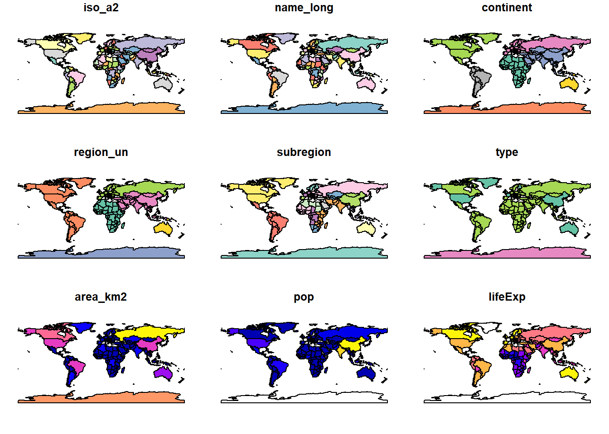
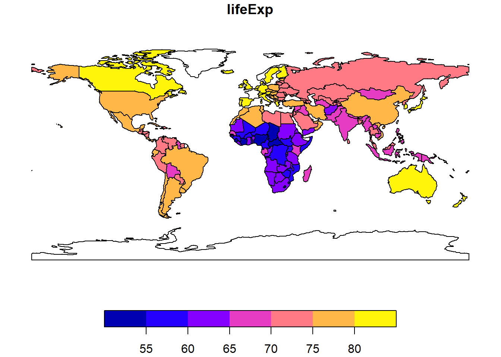
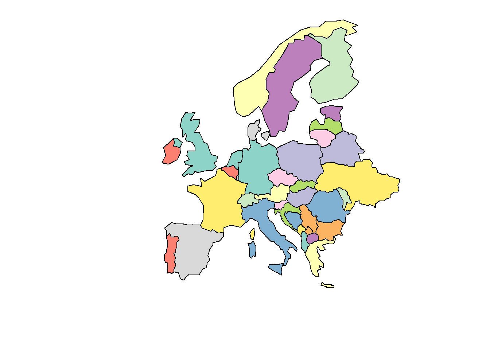
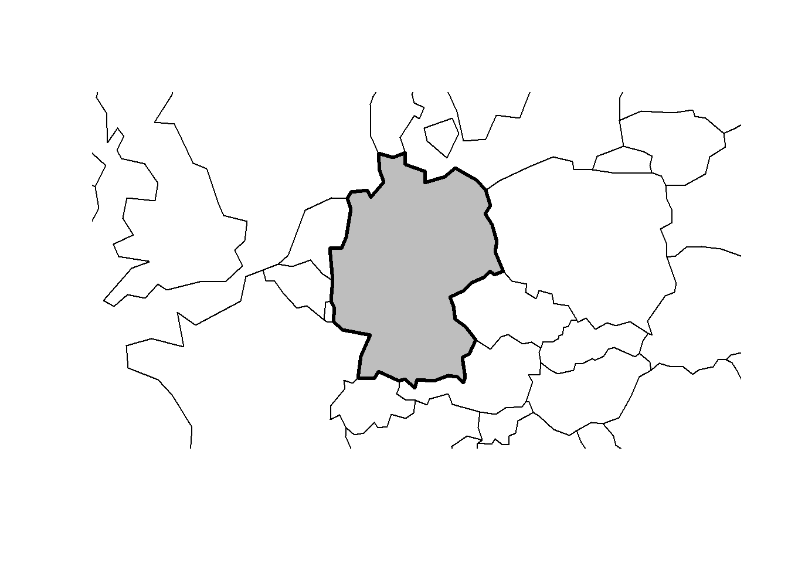
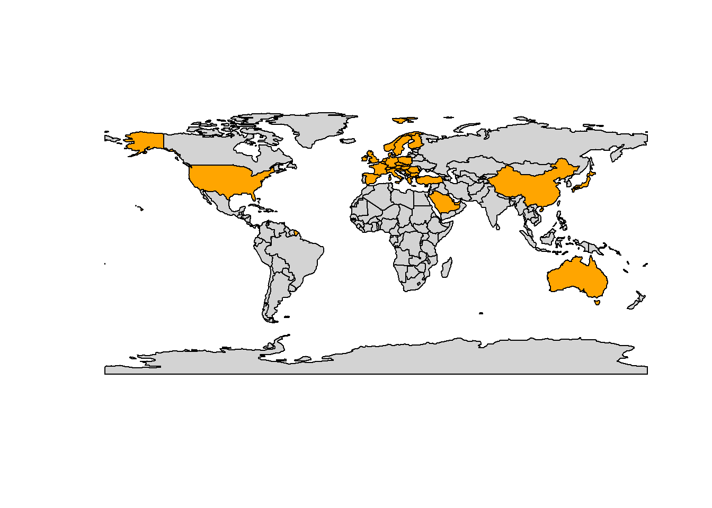
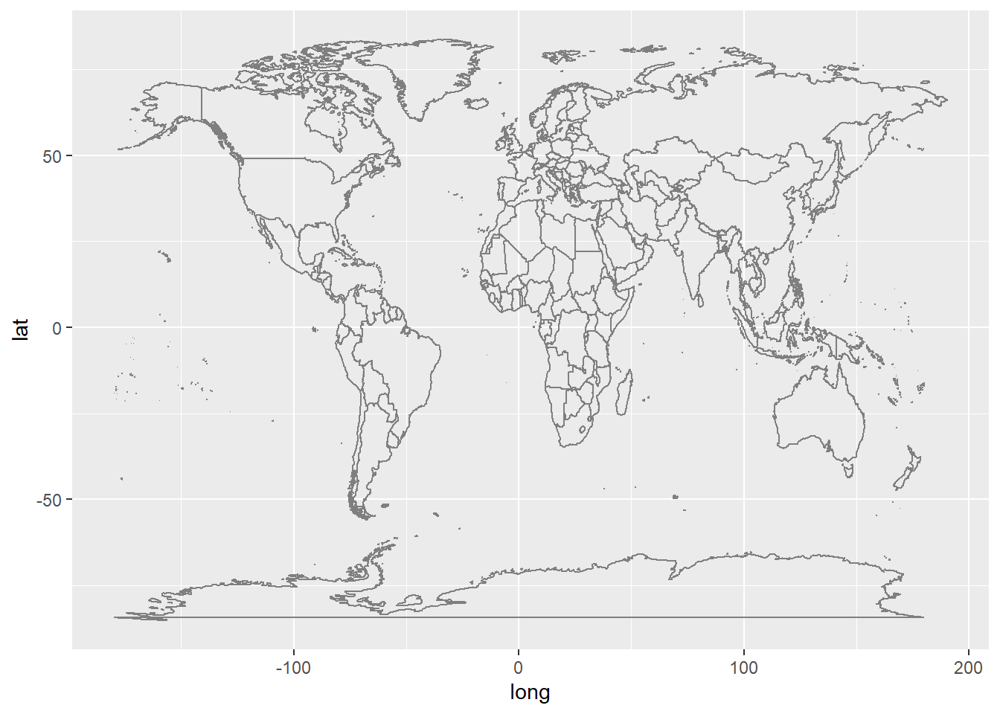
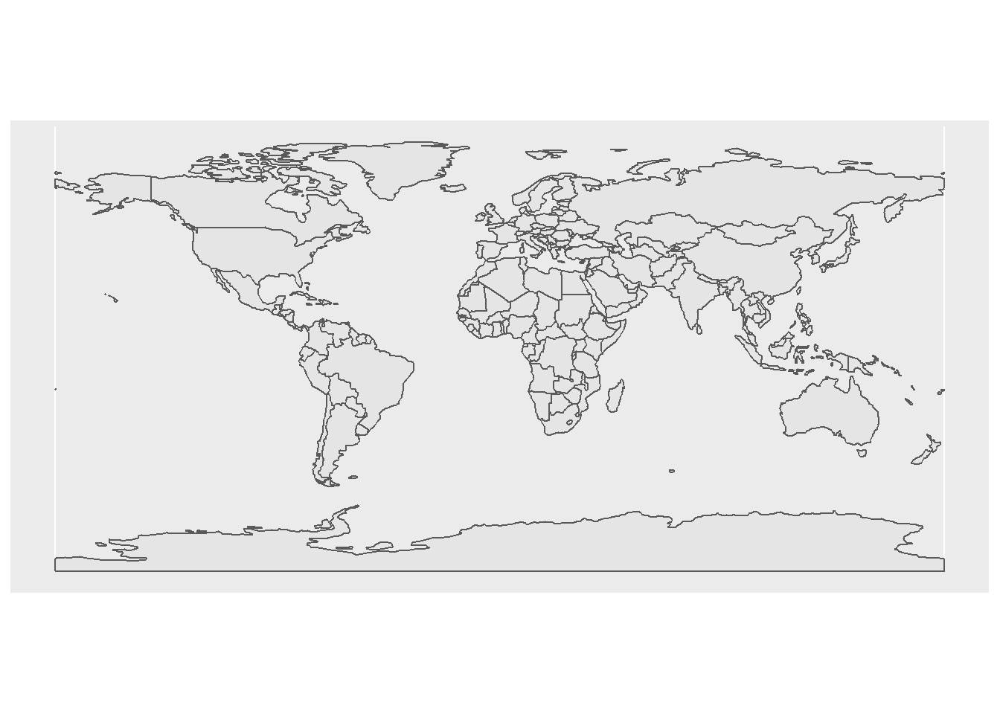
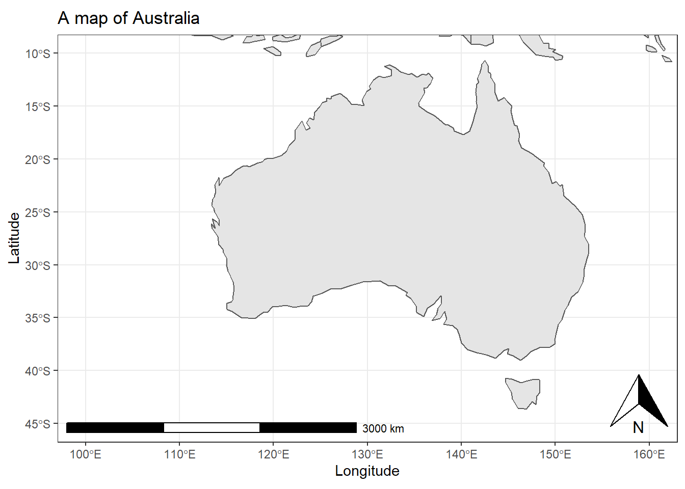
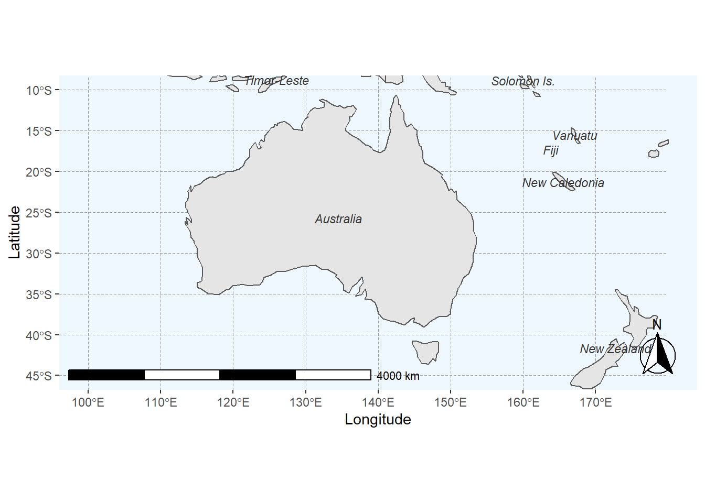
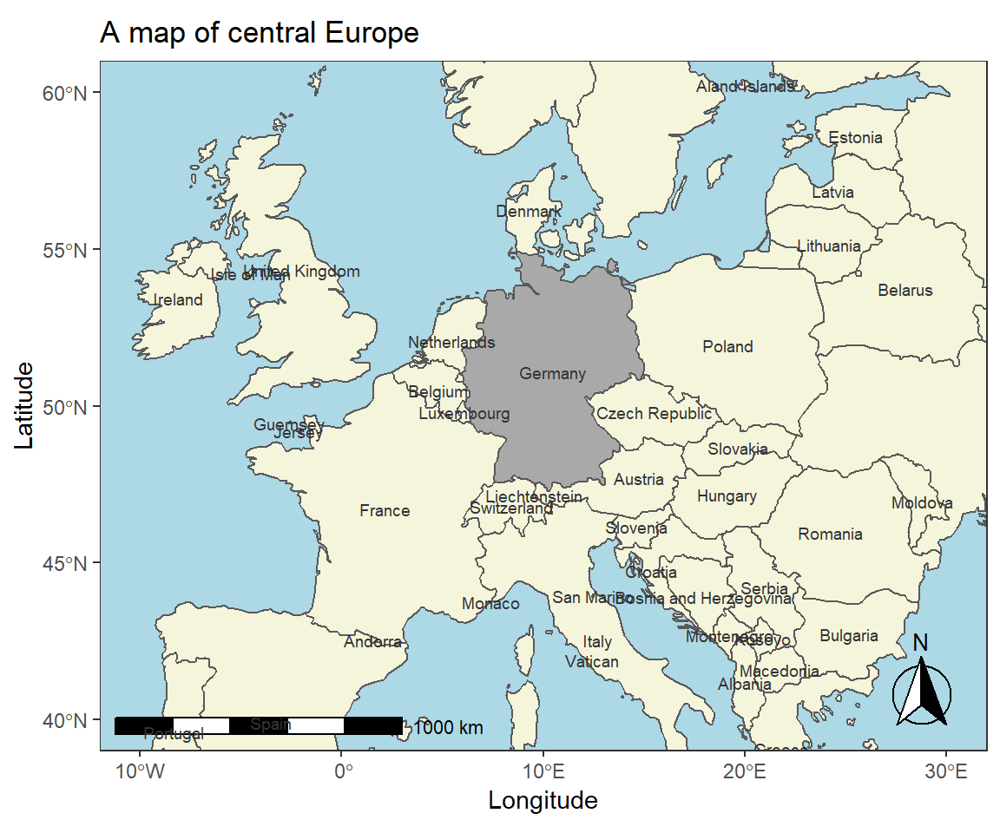

Introduction to Geospatial Data Visualization with R
Martin Schweinberger
2022-05-23

Introduction
This tutorial introduces geo-spatial data visualization in R.

This tutorial is aimed at beginners and intermediate users of R with the aim of showcasing how to visualize geospatial data, i.e. how to generate maps in R, and how to prepare data for geospatial visualizations using R. The aim is not to provide a fully-fledged analysis but rather to show and exemplify selected useful methods associated with generating maps. Very recommendable and detailed resources for geospatial data visualization using R can be found here or here.
The entire R Notebook for the tutorial can be downloaded here.
If you want to render the R Notebook on your machine, i.e. knitting the
document to html or a pdf, you need to make sure that you have R and
RStudio installed and you also need to download the bibliography
file and store it in the same folder where you store the
Rmd file.
Preparation and session set up
This tutorial is based on R. If you have not installed R or are new to it, you will find an introduction to and more information how to use R here. For this tutorials, we need to install certain packages from an R library so that the scripts shown below are executed without errors. Before turning to the code below, please install the packages by running the code below this paragraph. If you have already installed the packages mentioned below, then you can skip ahead and ignore this section. To install the necessary packages, simply run the following code - it may take some time (between 1 and 5 minutes to install all of the libraries so you do not need to worry if it takes some time). ***
NOTE
The installation of the packages will be relatively
data intensive due to some of the required packages containing shape
files - which renders these packages to be larger big in comparison to
other R packages. It is thus recommendable to be logged into an
institutional network that has a decent connectivity and download rate
(e.g., a university network).
install.packages("sf")
install.packages("raster")
install.packages("dplyr")
install.packages("spData")
install.packages("tmap")
install.packages("leaflet")
install.packages("ggplot2")
install.packages("spDataLarge",
repos = "https://nowosad.github.io/drat/", type = "source")
install.packages("ggspatial")
install.packages("rnaturalearth")
# install klippy for copy-to-clipboard button in code chunks
install.packages("remotes")
remotes::install_github("rlesur/klippy")Now that we have installed the packages, we activate them as shown below.
library(sf)
library(raster)
library(dplyr)
library(spData)
library(spDataLarge)
library(tmap)
library(ggplot2)
library(ggspatial)
library(rnaturalearth)Once you have installed R and RStudio and also initiated the session by executing the code shown above, you are good to go.
1 Creating basic maps
We will start by generating maps of the world using a in-build
world data set that is part of the spData
package and the plot function for generating the map.
plot(world)
We see that the world data set contains information on
various factors, such as information about regions (e.g.,
continent or subregion), country names
(name_long), population size (pop) or life
expectancy (lifeExp). We can use this information to show a
specific map as shown below.
plot(world["lifeExp"])
We can use the world data set and filter for specific
features, e.g., we can visualize only a single continent by filtering
for the continent we are interested in. In addition, we define the
x-axis and y-axis limits so that we zoom in on the region of
interest.
# extract europe (exclude russia and iceland)
world_eur <- world %>%
dplyr::filter(continent == "Europe",
name_long != "Russian Federation",
name_long != "Iceland") %>%
dplyr::select(name_long, geom)
# plot
plot(world_eur,
xlim = c(5, 10),
ylim = c(30, 70),
main = "")
We can also overlay information such as population size over continents and countries as shown below.
# plot world map
plot(world["continent"], reset = FALSE)
# define size bases on population size
cex <- sqrt(world$pop) / 10000
# center world map
world_cents <- sf::st_centroid(world, of_largest = TRUE)
# plot
plot(sf::st_geometry(world_cents),
add = TRUE,
cex = cex)
Overlaying is interesting because it allows us to highlight certain regaions or counrties as shown below.
# extract map of europe
world_eur <- world %>%
dplyr::filter(continent == "Europe")
# extract germany
ger <- world %>%
dplyr::filter(name_long == "Germany")
# plot germany
plot(sf::st_geometry(ger), expandBB = c(.2, .2, .2, .2), col = "gray", lwd = 3)
# plot europe
plot(world_eur[0], add = TRUE)
We can also add information to the world data set and
use the added information to generate customized plots.
# countries I have been to
countries <- c("United States", "Norway", "France", "United Arab Emirates",
"Qatar", "Sweden", "Poland", "Austria", "Hungary", "Romania",
"Germany", "Bulgaria", "Greece", "Turkey", "Croatia",
"Switzerland", "Belgium", "Netherlands", "Spain", "Ireland",
"Australia", "China", "Italy", "Denmark", "United Kingdom",
"Slovenia", "Finland", "Slovakia", "Czech Republic", "Japan",
"Saudi Arabia", "Serbia")
# data frame with countries I have visited
visited <- world %>%
dplyr::filter(name_long %in% countries)
# plot world
plot(world[0], col = "lightgray")
# overlay countries I have visited in orange
plot(sf::st_geometry(visited), add = TRUE, col = "orange")
2 Creating maps with ggplot2
So far, we have used the base plot function to generate
maps. However, it is also possible to use ggplot2 to
generate maps and the easiest way is to use borders to draw
a map.
# plot map
ggplot() +
borders()
Another option is to add geom_sf to a
ggplot2 object as shown below.
# plot map
ggplot(data = world) +
geom_sf()
The nice thing about ggplot2 is, of course, that it is
very easy to add layers and create very pretty visualizations.
# plot map
ggplot(data = world) +
geom_sf() +
theme_bw() +
# adding axes title
labs(x = "Longitude", y = "Latitude") +
# adding title and subtitle
ggtitle("A map of Australia") +
# defining coordinates
coord_sf(xlim = c(100.00, 160.00),
ylim = c(-45.00, -10.00),
expand = T) +
# add distance measure
annotation_scale(location = "bl", width_hint = 0.5) +
# add compass
annotation_north_arrow(location = "br")
Again, we can customize the map according to what we want. In
addition, we load a map with a higher resolution using the
ne_countries function from the rnaturalearth
package.
# load data
world <- rnaturalearth::ne_countries(returnclass = "sf")
# add to prevent errors
sf::sf_use_s2(FALSE)
# extract locations
world_points<- st_centroid(world)
# extract labels
world_points <- cbind(world, sf::st_coordinates(sf::st_centroid(world$geometry)))
# generate annotated world map
ggplot(data = world) +
# land is gray
geom_sf(fill= "gray90") +
# axes labels
labs(x = "Longitude", y = "Latitude") +
# define zoom
coord_sf(xlim = c(100.00, 180.00),
ylim = c(-45.00, -10.00), expand = T) +
# add scale bar
annotation_scale(location = "bl", width_hint = 0.5) +
# add compass
annotation_north_arrow(location = "br", which_north = "true",
style = north_arrow_fancy_orienteering) +
# define theme (add gridlines)
theme(panel.grid.major = element_line(color = "gray60",
linetype = "dashed",
size = 0.25),
# define background color
panel.background = element_rect(fill = "aliceblue")) +
# add text
geom_text(data= world_points,aes(x=X, y=Y, label=name),
color = "gray20", fontface = "italic", check_overlap = T, size = 3)
We can explore other designs and maps and show different regions of the world.
# load data
europe <- ne_countries(scale = "medium", continent='europe', returnclass = "sf")
# plot map
ggplot(data = europe) +
# add map and define filling
geom_sf(mapping = aes(fill = ifelse(name_long == "Germany", "0", "1"))) +
# simply black and white background
theme_bw() +
# adding axes title
labs(x = "Longitude", y = "Latitude") +
# adding title and subtitle
ggtitle("A map of central Europe") +
# defining coordinates
coord_sf(xlim = c(-10, 30),
ylim = c(40, 60)) +
# add distance measure
annotation_scale(location = "bl", width_hint = 0.5) +
# add compass
annotation_north_arrow(location = "br",
# make compass fancy
style = north_arrow_fancy_orienteering) +
theme(legend.position = "none",
# add background color
panel.background = element_rect(fill = "lightblue"),
# remove grid lines
panel.grid.major = element_blank(),
panel.grid.minor = element_blank()) +
# define fill colors
scale_fill_manual(name = "Country", values = c("darkgray", "beige")) +
# add text
geom_sf_text(aes(label = name_long), size=2.5, color = "gray20")
We will end this introduction here but if you want to want to learn more, check out the more advanced LADAL tutorials on visualizing geospatial data visualization.
Citation & Session Info
Schweinberger, Martin. 2022. Introduction to Geospatial Data Visualization with R. Brisbane: The University of Queensland. url: https://slcladal.github.io/introgviz.html (Version 2022.05.23).
@manual{schweinberger2022introgviz,
author = {Schweinberger, Martin},
title = {Introduction to Geospatial Data Visualization with R},
note = {https://slcladal.github.io/maps.html},
year = {2022},
organization = "The University of Queensland, Australia. School of Languages and Cultures},
address = {Brisbane},
edition = {2022.05.23}
}sessionInfo()## R version 4.2.0 (2022-04-22 ucrt)
## Platform: x86_64-w64-mingw32/x64 (64-bit)
## Running under: Windows 10 x64 (build 19043)
##
## Matrix products: default
##
## locale:
## [1] LC_COLLATE=German_Germany.utf8 LC_CTYPE=German_Germany.utf8
## [3] LC_MONETARY=German_Germany.utf8 LC_NUMERIC=C
## [5] LC_TIME=German_Germany.utf8
##
## attached base packages:
## [1] stats graphics grDevices datasets utils methods base
##
## other attached packages:
## [1] rnaturalearth_0.1.0 ggspatial_1.1.5 ggplot2_3.3.6
## [4] tmap_3.3-3 spDataLarge_2.0.6 spData_2.0.1
## [7] dplyr_1.0.9 raster_3.5-15 sp_1.4-7
## [10] sf_1.0-7
##
## loaded via a namespace (and not attached):
## [1] maps_3.4.0 sass_0.4.1 jsonlite_1.8.0
## [4] viridisLite_0.4.0 bslib_0.3.1 assertthat_0.2.1
## [7] highr_0.9 renv_0.15.4 yaml_2.3.5
## [10] pillar_1.7.0 lattice_0.20-45 glue_1.6.2
## [13] digest_0.6.29 RColorBrewer_1.1-3 colorspace_2.0-3
## [16] htmltools_0.5.2 XML_3.99-0.9 pkgconfig_2.0.3
## [19] stars_0.5-5 s2_1.0.7 purrr_0.3.4
## [22] scales_1.2.0 terra_1.5-21 tibble_3.1.7
## [25] proxy_0.4-26 farver_2.1.0 generics_0.1.2
## [28] ellipsis_0.3.2 withr_2.5.0 leafsync_0.1.0
## [31] cli_3.3.0 magrittr_2.0.3 crayon_1.5.1
## [34] evaluate_0.15 fansi_1.0.3 lwgeom_0.2-8
## [37] class_7.3-20 tools_4.2.0 lifecycle_1.0.1
## [40] stringr_1.4.0 munsell_0.5.0 compiler_4.2.0
## [43] jquerylib_0.1.4 e1071_1.7-9 rlang_1.0.2
## [46] classInt_0.4-3 units_0.8-0 grid_4.2.0
## [49] tmaptools_3.1-1 dichromat_2.0-0.1 rstudioapi_0.13
## [52] htmlwidgets_1.5.4 crosstalk_1.2.0 labeling_0.4.2
## [55] leafem_0.2.0 base64enc_0.1-3 rmarkdown_2.14
## [58] wk_0.6.0 gtable_0.3.0 codetools_0.2-18
## [61] abind_1.4-5 DBI_1.1.2 R6_2.5.1
## [64] knitr_1.39 fastmap_1.1.0 utf8_1.2.2
## [67] KernSmooth_2.23-20 stringi_1.7.6 parallel_4.2.0
## [70] Rcpp_1.0.8.3 vctrs_0.4.1 png_0.1-7
## [73] rnaturalearthdata_0.1.0 leaflet_2.1.1 tidyselect_1.1.2
## [76] xfun_0.30